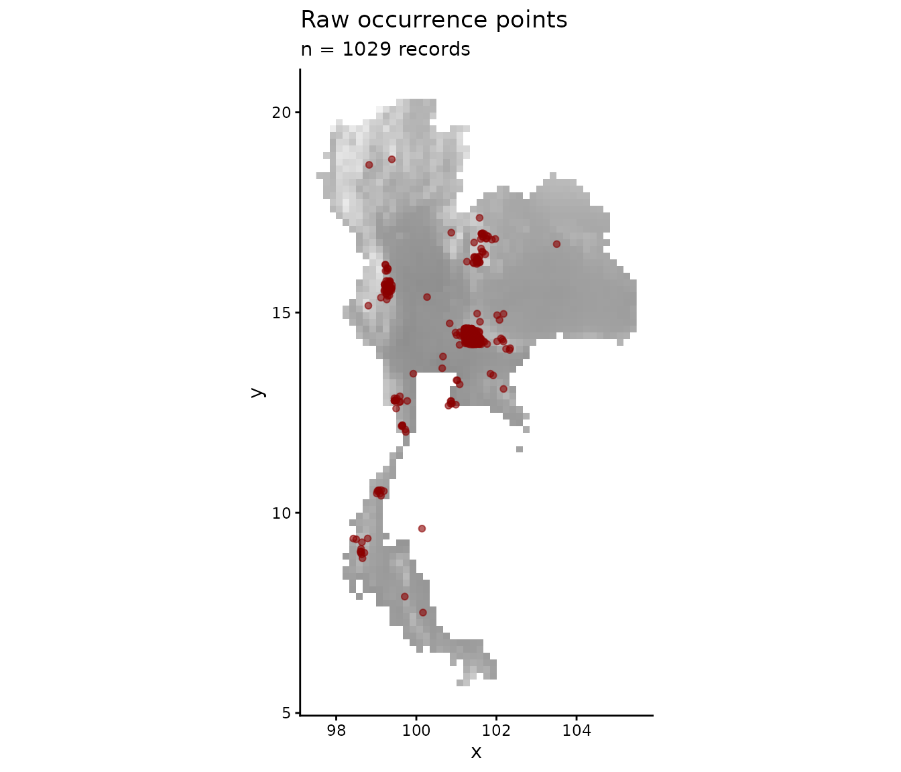
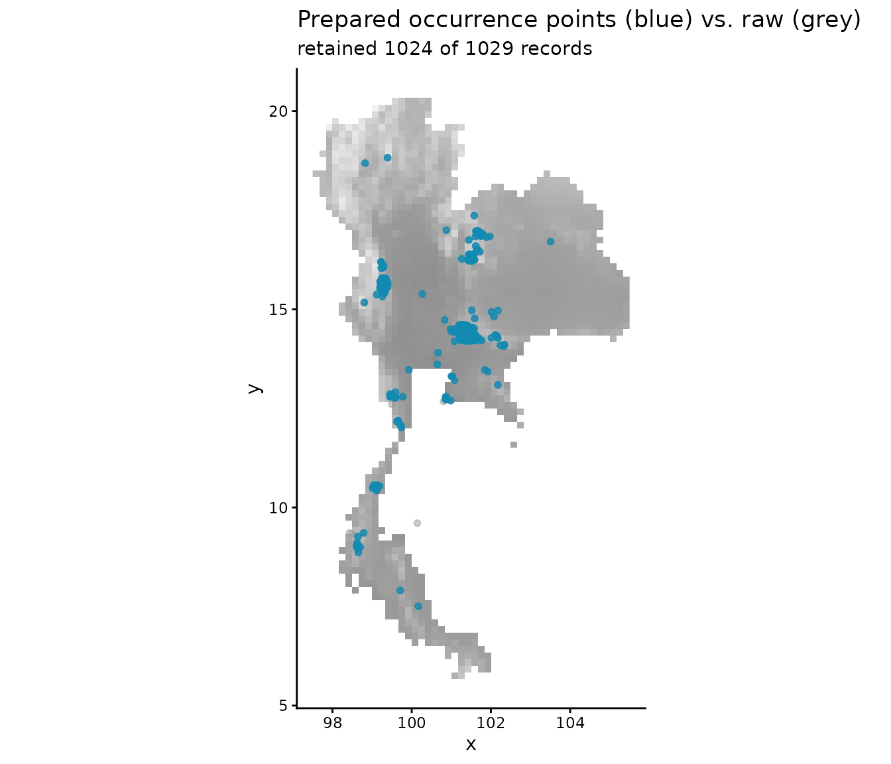

prepare_bean() cleans raw occurrence records and
attaches environmental values to each point. The function:
- drops records with missing coordinates;
- optionally standardises (
"scale") or PCA-rotates ("pca") the environmental rasters before extraction; - extracts environmental values for every occurrence;
- drops records that fall outside the raster extent.
Load raw data
library(bean)
library(terra)
occ_file <- system.file("extdata", "Rusa_unicolor.csv", package = "bean")
env_file <- system.file("extdata", "thai_env.tif", package = "bean")
occ_data_raw <- read.csv(occ_file)
env <- terra::rast(env_file)
head(occ_data_raw)
#> species y x
#> 1 Rusa unicolor 15.37239 99.11555
#> 2 Rusa unicolor 15.41415 99.28763
#> 3 Rusa unicolor 14.46838 101.22005
#> 4 Rusa unicolor 15.65606 99.31600
#> 5 Rusa unicolor 14.39543 101.41694
#> 6 Rusa unicolor 12.72500 100.88947
env
#> class : SpatRaster
#> size : 88, 48, 4 (nrow, ncol, nlyr)
#> resolution : 0.1666667, 0.1666667 (x, y)
#> extent : 97.5, 105.5, 5.666667, 20.33333 (xmin, xmax, ymin, ymax)
#> coord. ref. : lon/lat WGS 84 (EPSG:4326)
#> source : thai_env.tif
#> names : bio_1, bio_12, bio_15, bio_4
#> min values : 20.527281, 806, 37.47298, 53.402359
#> max values : 28.521406, 3802, 108.317207, 336.597565Visualise the raw occurrence points
The raw points are clearly clustered along roads and around cities — a classic example of spatial sampling bias.
library(ggplot2)
env_df <- as.data.frame(env[[1]], xy = TRUE)
ggplot(occ_data_raw, aes(x, y)) +
geom_raster(data = env_df, aes(x, y, fill = .data[[names(env)[1]]])) +
geom_point(alpha = 0.6, colour = "darkred", size = 1.4) +
scale_fill_gradient(low = "grey95", high = "grey55", guide = "none") +
coord_fixed() +
labs(title = "Raw occurrence points",
subtitle = sprintf("n = %d records", nrow(occ_data_raw))) +
theme_classic()
Run prepare_bean()
prepared <- prepare_bean(
data = occ_data_raw,
env_rasters = env,
longitude = "x",
latitude = "y",
transform = "scale"
)
#> Scaling environmental rasters...
#> Extracting environmental data for occurrence points...
#> 5 records removed because they fell outside the raster extent or had NA environmental values.
#> Data preparation complete. Returning 1024 clean records.
head(prepared)
#> species y x bio_1 bio_12 bio_15
#> 1 Rusa unicolor 15.37239 99.11555 -1.6909295 0.003511156 -0.2454693
#> 2 Rusa unicolor 15.41415 99.28763 -0.8711075 -0.267821213 -0.3053829
#> 3 Rusa unicolor 14.46838 101.22005 -1.3879976 -0.534812263 -0.3835742
#> 4 Rusa unicolor 15.65606 99.31600 -0.6288324 -0.224408034 -0.2390396
#> 5 Rusa unicolor 14.39543 101.41694 -2.0311866 -0.604273349 -0.5074636
#> 6 Rusa unicolor 12.72500 100.88947 1.0537073 -0.311234392 -0.6623129
#> bio_4
#> 1 -0.2573387
#> 2 -0.1768698
#> 3 -0.2876102
#> 4 -0.0834852
#> 5 -0.1398570
#> 6 -1.0746857
summary(prepared[, -(1:3)])
#> bio_1 bio_12 bio_15 bio_4
#> Min. :-2.777 Min. :-1.3162 Min. :-2.6297 Min. :-1.9125
#> 1st Qu.:-2.031 1st Qu.:-0.6043 1st Qu.:-0.5075 1st Qu.:-0.2876
#> Median :-1.388 Median :-0.5500 Median :-0.3836 Median :-0.1399
#> Mean :-1.143 Mean :-0.4804 Mean :-0.4194 Mean :-0.1852
#> 3rd Qu.:-0.731 3rd Qu.:-0.5131 3rd Qu.:-0.3648 3rd Qu.:-0.0518
#> Max. : 1.461 Max. : 3.0186 Max. : 0.9055 Max. : 1.2052Visualise the prepared points
After cleaning, the records that survived are mapped here in blue. Points that were dropped (missing coordinates or outside the raster extent) are shown in red for comparison.
ggplot() +
geom_raster(data = env_df, aes(x, y, fill = .data[[names(env)[1]]])) +
geom_point(data = occ_data_raw, aes(x, y),
colour = "red", size = 1.4, alpha = 0.5) +
geom_point(data = prepared, aes(x, y),
colour = "#118ab2", size = 1.4, alpha = 0.8) +
scale_fill_gradient(low = "grey95", high = "grey55", guide = "none") +
coord_fixed() +
labs(title = "Prepared occurrence points (blue) vs. raw (grey)",
subtitle = sprintf("retained %d of %d records",
nrow(prepared), nrow(occ_data_raw))) +
theme_classic()
The shipped, pre-computed dataset
For users without terra, the package also ships the
result of running the same pipeline on the bundled rasters:
data(origin_dat_prepared, package = "bean")
head(origin_dat_prepared)
#> species y x bio_1 bio_12 bio_15
#> 1 Rusa unicolor 15.37239 99.11555 -1.6909295 0.003511156 -0.2454693
#> 2 Rusa unicolor 15.41415 99.28763 -0.8711075 -0.267821213 -0.3053829
#> 3 Rusa unicolor 14.46838 101.22005 -1.3879976 -0.534812263 -0.3835742
#> 4 Rusa unicolor 15.65606 99.31600 -0.6288324 -0.224408034 -0.2390396
#> 5 Rusa unicolor 14.39543 101.41694 -2.0311866 -0.604273349 -0.5074636
#> 6 Rusa unicolor 12.72500 100.88947 1.0537073 -0.311234392 -0.6623129
#> bio_4
#> 1 -0.2573387
#> 2 -0.1768698
#> 3 -0.2876102
#> 4 -0.0834852
#> 5 -0.1398570
#> 6 -1.0746857This is the object used in the next two vignettes.